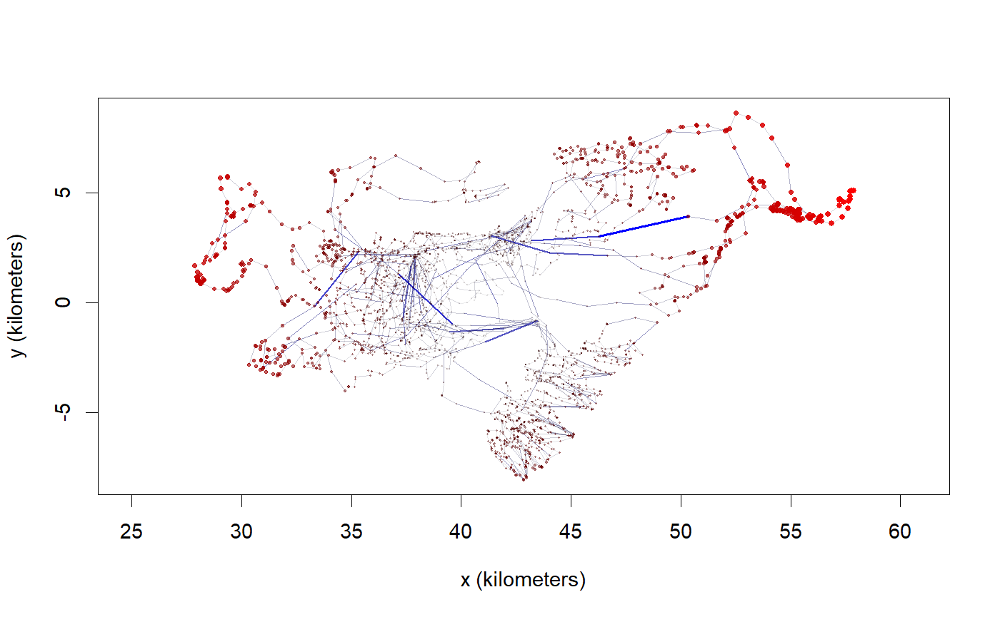

Produces a data.frame of speed and distance estimates to analyze, as well as a plot highlighting potential speed and distance outliers in telemetry data.
outlie(data,UERE=10,standardize=FALSE,plot=TRUE,...)
| data |
|
|---|---|
| UERE | Device-dependent telemetry error in meters. Only necessary for uncalibrated data. |
| standardize | Standardize speed and distance output by their median absolute deviation (MAD). |
| plot | Output a plot highlighting high speeds (blue) and distant locations (red). |
| ... | Arguments passed to |
Distances are calculated from the median longitude & latitude, while speeds are calculated over the timesteps. Both estimates account for telemetry error and condition on as few data points as possible. The speed estimates furthermore account for timestamp truncation and assign each timestep's speed to the most likely offending time, based on its other adjacent speed estimate.
If plot=TRUE, intervals of high speed are highlighted with blue segments, while distant locations are highlighted with red points.
Returns a data.frame of distances and speeds. Can also produce a plot as a side effect.
The speed estimates here are tailored for outlier detection and have poor statistical efficiency. The predict and speed methods are appropriate for estimating speed (after outliers have been removed and a movement model has been selected).
# Load package and data library(ctmm) data(buffalo) # look for outliers in Cilla OUT <- outlie(buffalo[[1]])# look at the distribution of speed esitmates hist(OUT$speed)